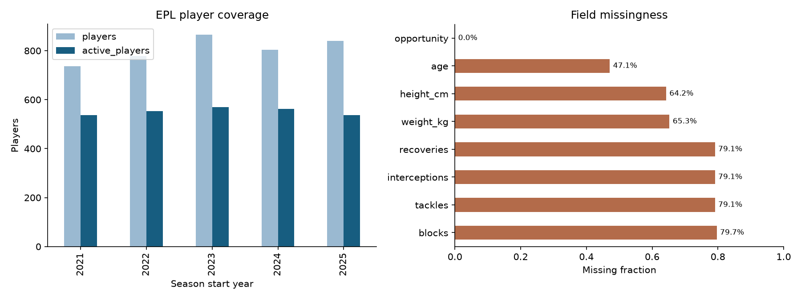
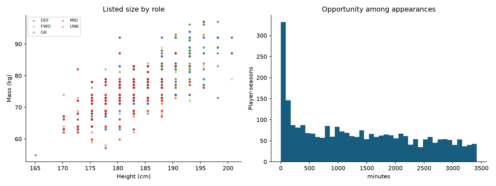
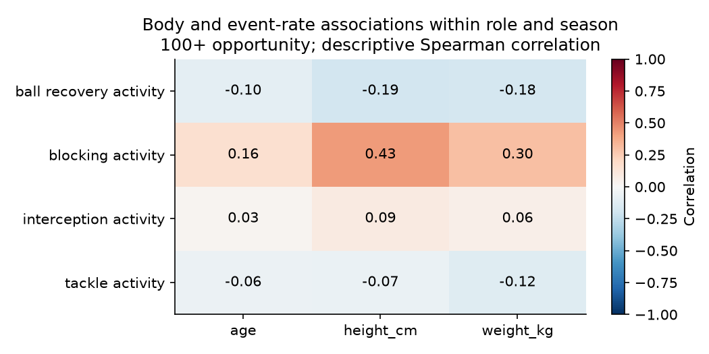

4,025 player-season rows · 1,797 athletes · [2021, 2022, 2023, 2024, 2025]
Role-specific event evidence, data coverage and uncertainty govern interpretation. Physical role similarity does not establish cross-sport success.



2024 selects the model; 2025 evaluates it. Forecasts exclude current physical listings. Baselines are retained when they perform better on validation.
| task | target | fold | model | selected_on_validation | n | brier | average_precision | mae | rmse | spearman | r2 |
|---|---|---|---|---|---|---|---|---|---|---|---|
| availability | any_opportunity | validation | prevalence | False | 865 | 0.249 | 0.447 | NaN | NaN | NaN | NaN |
| availability | any_opportunity | validation | logistic | True | 865 | 0.126 | 0.867 | NaN | NaN | NaN | NaN |
| availability | any_opportunity | test | prevalence | False | 804 | 0.249 | 0.465 | NaN | NaN | NaN | NaN |
| availability | any_opportunity | test | logistic | True | 804 | 0.221 | 0.757 | NaN | NaN | NaN | NaN |
| opportunity | opportunity | validation | persistence | False | 865 | NaN | NaN | 513.252 | 850.248 | 0.673 | 0.327 |
| opportunity | opportunity | validation | hurdle_ridge | True | 865 | NaN | NaN | 452.225 | 747.435 | 0.735 | 0.480 |
| opportunity | opportunity | test | persistence | False | 804 | NaN | NaN | 538.767 | 899.921 | 0.641 | 0.243 |
| opportunity | opportunity | test | hurdle_ridge | True | 804 | NaN | NaN | 576.252 | 821.762 | 0.635 | 0.369 |